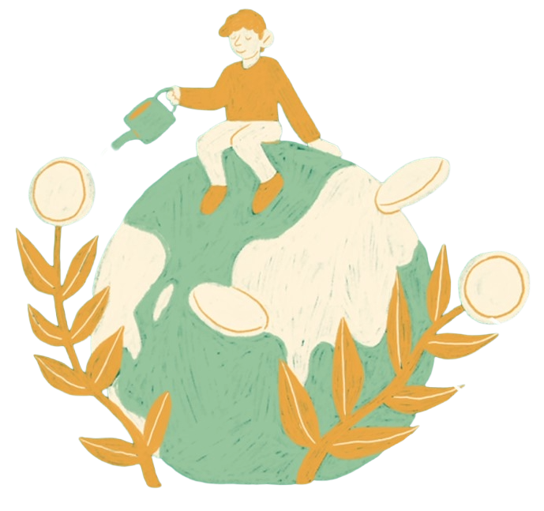
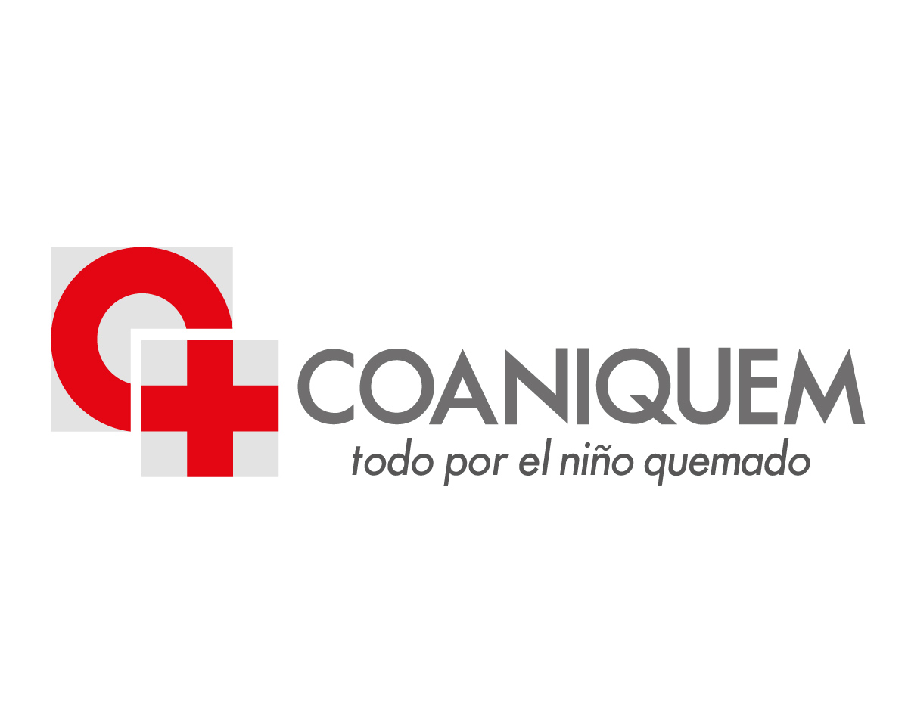
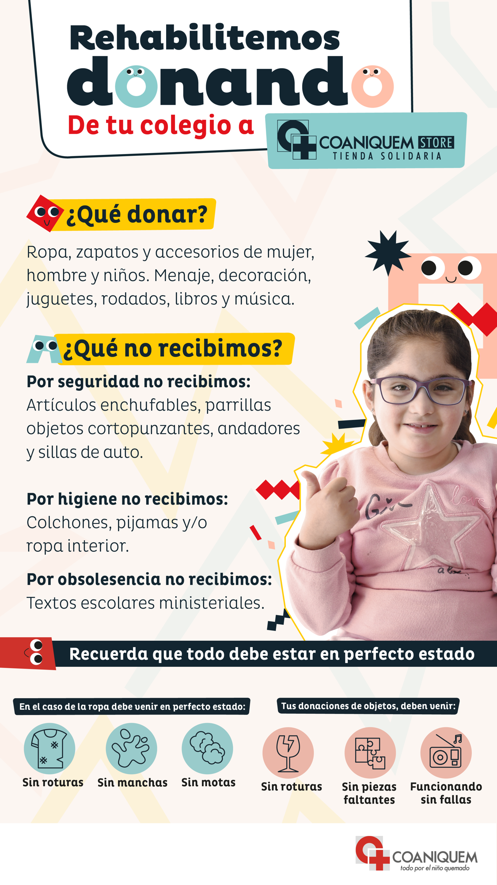

Charlas de Sustentabilidad
Cuatro charlas con expertos: reciclaje en casa, huella de carbono, aceites y compostaje. 30 min c/u.
COLEGIO SUIZO SANTIAGO · COMISIÓN DE MEDIO AMBIENTE · CENTRO DE PARES
Una jornada para compartir, aprender e inspirarnos en torno al cuidado del planeta.

Una jornada para compartir, aprender e inspirarnos en torno al cuidado del planeta — con actividades para todas las edades. 🌿
Tema central 2026
Exploramos cómo la economía circular transforma nuestra forma de consumir y relacionarnos con el planeta.
🌟 Actividades de la jornada
Cuatro charlas con expertos: reciclaje en casa, huella de carbono, aceites y compostaje. 30 min c/u.
Bomba de semillas, desodorante natural y cambio climático. ¡Actividades para niños y adultos!
Descubre productos y servicios sustentables de emprendedores de nuestra comunidad.
Recupera las prendas perdidas de tus hijos. Consumir conscientemente es también recuperar.
Un ingeniero evalúa si tu aparato puede repararse, evitando comprar uno nuevo.
Trae ropa y artículos en buen estado para ayudar a financiar tratamientos de quemaduras.
Acción solidaria y economía circular

En EcoFest tendremos un punto de donación de Coaniquem para recibir objetos en buen estado, promover la reutilización y apoyar el trabajo de la fundación.
Ver detalles
📋 Programa visual — ¿qué pasa y cuándo?
Feria y jornadas circulares durante toda la jornada. Talleres en bloques continuos hasta las 12:00 hrs. Charlas de 30 minutos cada una.
🎤 Las cuatro charlas
10:30 hrs
Las decisiones cotidianas de transporte, alimentación y consumo generan emisiones de CO₂. Aprende qué podemos cambiar desde la economía circular.
👨👩👧👦 5° básico en adelante11:00 hrs
Principios básicos del reciclaje y opciones concretas para hacerlo desde casa y en la ciudad.
👨👩👧👦 Toda la familia11:30 hrs
El impacto del aceite de cocina en el medio ambiente y cómo reciclarlo correctamente desde casa.
👨👩👧👦 Todas las edades12:00 hrs
Alternativas para transformar residuos orgánicos del hogar en abono para tus plantas.
👨👩👧👦 Todas las edades✂️ Talleres prácticos — 10:00 a 12:00 hrs
Los materiales están incluidos. ¡Cada participante se lleva algo concreto a casa!
Taller · 10:00–12:00 hrs
Prepara una bomba de barro con semillas de hortalizas y hierbas para cultivar en casa. Los niños aprenden a reconocer distintas semillas y se llevan su bomba lista para plantar.
Taller · 10:00–12:00 hrs
Representar un lugar en dos momentos: cómo está hoy y cómo podría verse si lo adaptamos. Trabajo en grupos con collage y dibujo colaborativo.
Taller · 10:00–12:00 hrs
Bicarbonato, aceite de coco, maicena y aceite esencial. Sin plástico ni químicos innecesarios, con ingredientes que probablemente ya tienes en casa.
💛 Jornadas circulares — disponibles toda la jornada
Trae ropa y artículos del hogar en buen estado. Coaniquem los vende en sus tiendas solidarias para financiar curaciones y tratamiento de quemaduras.
Recupera las prendas que tus hijos han perdido este semestre. Consumo consciente: recuperar y reutilizar antes de comprar cosas nuevas.
José Luis Lambert, ingeniero electricista, evaluará si tu aparato dañado puede repararse, evitando la compra de uno nuevo.
10:00 – 13:00 hrs
Conoce productos y servicios que promueven la reutilización y el reciclaje en nuestra comunidad.
📍 Lugar del evento
José Domingo Cañas 2206
Ñuñoa, Región Metropolitana, Chile
Te esperamos para compartir una jornada de aprendizaje, actividades, talleres y feria de emprendedores sostenibles.
Ver ubicación¡Únete!
Colegio Suizo Santiago · 10:00 a 13:00 hrs · Ingreso gratuito